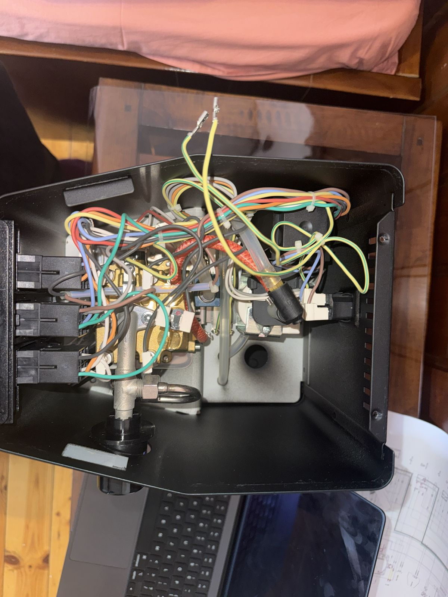
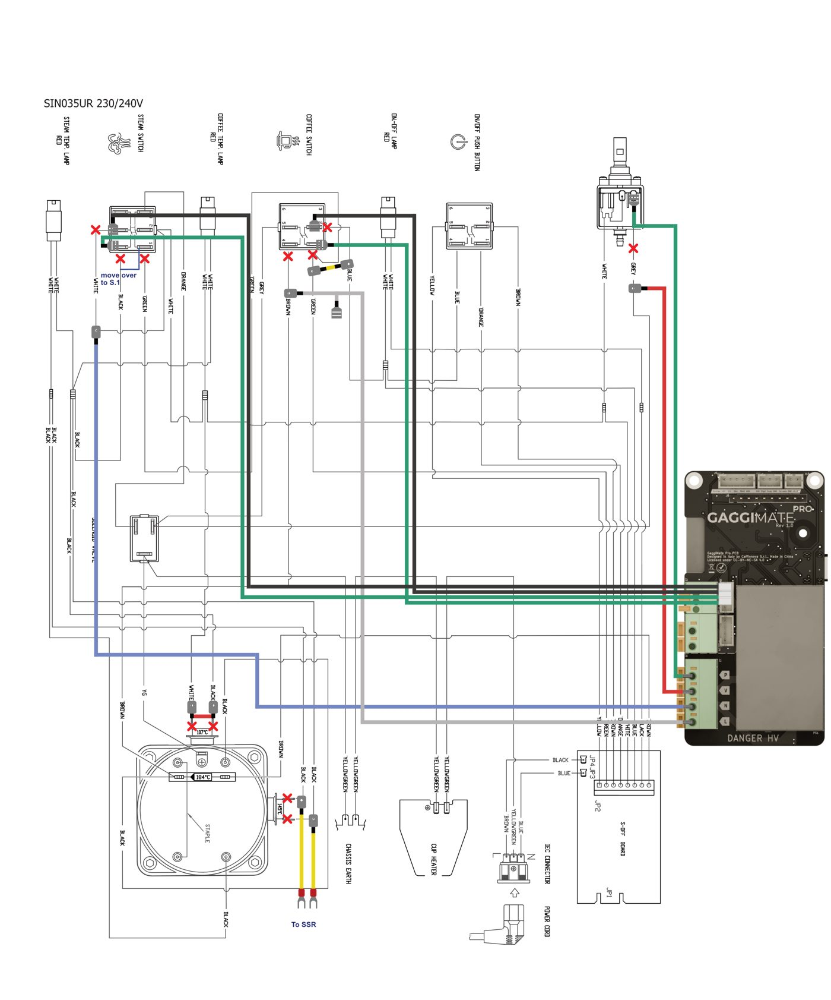
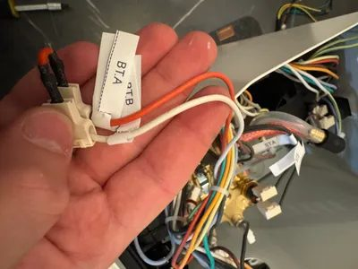
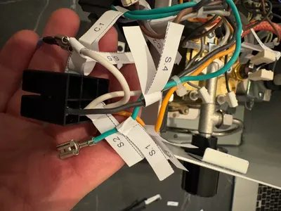
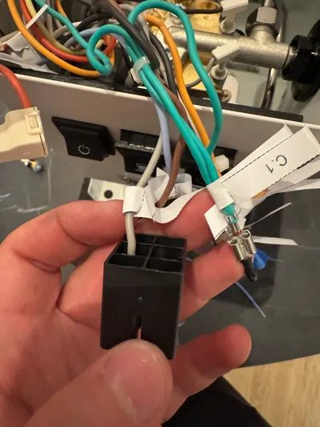

Three things worth knowing
- FactThe stock machine is three switches and three heat-sensitive switches. Two thermostats (brew 107 °C, steam 145 °C) click the heater on and off, a 184 °C thermal fuse is the last line of defence, and the brew switch powers the pump and the three-way valve together. S4 S8
- FactGaggiMate swaps the thermostat for a sensor plus a brain. The brew thermostat is replaced by a thermocouple, the heater is driven through an SSR, and the board gets its own wires to the pump and the valve, so it can run each one separately. Pro adds a pressure sensor. S1 S2
- OpinionThe real upgrade is a feedback loop. Steadier temperature, preinfusion, pressure and flow profiles and stop-by-weight all come from the same idea: measure, compare to a target, correct. That turns dialling in from guessing into a controlled experiment.
A shot is just three problems
Tap the section or press → to build it up.
1 · Move water
Something has to push about 40 g of water through a packed bed of coffee. That is the pump's job.2 · Heat it to the right temperature
Water near 90–96 °C dissolves the flavours we want quickly. Too cool tastes sour, too hot can taste harsh. The boiler does this. S203 · Control how it meets the coffee
The puck pushes back. Pressure only exists because the coffee has resistance. Without a puck, the same pump just sprays water at near-zero pressure.Tour this photo
Rado's own photo of an open E24-class Classic Pro, top-down with the cup warmer off. Front (switches) is on the left. Tap a number.

Tap a number on the photo.
Follow a drop of water
Pick a mode to see which path is live.
- FactTank → pump. A vibratory pump (Ulka EP5 type on 230 V machines) is rated 15 bar. That is what it can push against a closed outlet, not what reaches your coffee. S5 S8
- FactThe OPV on the pump outlet is a fixed spring valve. Once pressure passes its set point, it sends surplus water back to the tank. Sources disagree on the factory figure: the 2019 service manual says 11 bar (+1/−0.5), retailers say 9–12 bar depending on market, and no measured reading for an EU E24 was found. S5 S6
- FactBoiler. On the E24 it is brass (earlier Classic Pros used aluminium). Cold water in, hot water out the top. S7
- FactThree-way valve. Powered, it connects boiler to group. Unpowered, it connects the group to the drip tray, which is why you hear a pssht and get a drier puck when you stop the shot. S4 S15
- FactSteam. Opening the knob lets steam (or, with the pump running, hot water) leave through the wand. There is no electrical "steaming" state. S4
Six states, no computer
The stock Gaggia has no microchip deciding anything about the brew. Comori Coffee, an electrical engineer, redrew the official diagram into a functional one. Here are its states. S4
Heat-up: power on, boiler cold. Both thermostats are closed, so current flows straight through them and the heater runs at full power. The lamps are shorted out and stay dark.
- Heat-up: both thermostats closed, heater full on, lamps dark (shorted out).
- Brew ready: brew thermostat opens at temperature; current must pass through the brew lamp, which has far higher resistance, so the lamp lights and the heater effectively stops.
- Brewing: brew switch powers the pump and the 3-way valve together. Heater still cycles on the brew thermostat.
- Steam heat: steam switch bypasses the brew thermostat; heater runs until the steam thermostat opens. It also cuts the valve, so the group stays closed.
- Steam ready: steam thermostat opens, steam lamp lights, heater effectively off. It cycles.
Why stock falls short for control
A thermostat is a bang-bang controller: it is either fully on or fully off, and it flips at slightly different temperatures going up and coming down. That gap is hysteresis. S19 S17
Illustration: the thermostat line saw-tooths up and down around its switch point, overshooting after each heater burst; the PID line rises, settles and stays close to its target.
- FactTemperature: the heater is either full power or off, with the switch on the outside of the boiler. Where in the cycle you start the shot changes the water temperature. That is why "temperature surfing" exists. S4
- FactPressure: no gauge, no sensor, a fixed OPV. You cannot see or change it without opening the machine. S6
- FactPump and valve are welded together by one switch. You cannot have the valve open with the pump paused, which is what a soak-style preinfusion needs. S4
- OpinionNo stopping by weight. You watch a scale and react, adding a second or two of human lag every shot.
What GaggiMate is
Fact An open-source controller: a board with its own power supply, a touchscreen, a thermocouple and an SSR. The Pro version adds a pressure transducer plumbed into the water line. S2 S23
| Feature | Standard | Pro |
|---|---|---|
| PID temperature control | ✓ | ✓ |
| Simple brew profiles (pump/valve phases, timed) | ✓ | ✓ |
| Brew by weight with Bluetooth scale | ✓ | ✓ |
| Profiles with pressure / flow control | – | ✓ |
| Exit conditions, phase transitions | – | ✓ |
| Shot diagrams | weight + temp only | ✓ (incl. pressure) |
| Steam assist with pump | less smooth | ✓ |
| Web UI, OTA updates, Home Assistant, hot water | ✓ | ✓ |
Stable release at time of writing: v1.7.3. S2
What every wiring change does
For each change: what the part did stock, what is cut or bridged, and what the board gains. Labels (BT, ST, S.x, C.x, PMP) are the official guide's.



① Brew thermostat → red jumper + thermocouple
Stock: BT opens at about 107 °C and stops the heater. Change: unscrew BT, bridge its two wires BT.A–BT.B with a red jumper, screw an M4 thermocouple into the same hole (hand-tight, red = +, blue = −). Gain: the board now reads temperature instead of a disc snapping at one point. S1

② Steam thermostat wires → SSR output
Stock: ST gates the heater. Change: ST.A and ST.B come off the thermostat and are extended with yellow 18 AWG wires to the SSR's output side (polarity doesn't matter on AC). The SSR's input gets the yellow (+) / black (−) signal from the board. The ST can stay in place or be removed. Gain: the board switches the heater's mains current with a few volts, silently and as often as it wants. S1
③ Steam switch: S.5 to Neutral, S.1 out, S.4 moved
Change: S.5 (white) goes to the board's N terminal via blue wire. On 240 V, S.1 is removed and insulated; on both, S.4 (black) moves to the S.1 position. Gain: the board gets neutral for its own supply, and the steam switch no longer bypasses anything at mains level. My reading of the diagram, not stated in the guide. S1

④ Brew switch: Eco PCB bypassed, C.4 to Line
Change (240 V only): C.1 and C.2 come off the switch and are joined with a yellow jumper, taking the Eco board's auto-off out of the loop. Both: C.4 (brown) is extended with grey wire to the board's L terminal. Gain: the board gets switched line power, and standby is now handled by GaggiMate. S1

⑤ Pump and valve get separate wires
Stock: one switch feeds both. Change: PMP.B (grey, not the thermal-fuse side) is lifted off the pump and run by red wire to the board's V (valve) terminal. A new green wire goes from that pump terminal to the board's P (pump) terminal. Gain: pump and valve are independent. Valve open, pump off = soak. Pump at partial power = gentle fill. S1
⑥ Pro only: a T in the water line + pressure transducer
Change: unscrew the pump from the OPV, add an L-fitting and T-fitting, run PTFE tube from the T to a pressure transducer lying at the bottom of the machine, bleed the air out. Gain: the board can see pressure, so it can hold a target pressure or estimate flow and change pump power to match: a closed loop. S1 S3
⑦ Optional: keep the physical buttons as low-voltage inputs
A green/black 4-wire cable connects the free sides of the brew and steam switches (C.1, C.2, S.4, S.5) to the board as sense lines. The guide warns: never mix high and low voltage on the same side of a switch. S1
The five ideas the kit runs on
PID: a thermostat that does maths
Fact Output = P (how far off now) + I (how long you've been off) + D (how fast you're changing). Near target it eases off, so it doesn't overshoot like an on/off switch. S11
Duty cycle: how a switch makes "half power"
Fact An SSR is still on/off, but switched quickly. On 30% of the time → a 1200 W heater averages 360 W. The PID picks the percentage. S18 S5
SSR: a switch with no moving parts
Fact A few volts light an internal LED, which triggers semiconductors that pass mains current. Silent, no contact wear. S12
Not confirmed Exactly how the board varies pump power (e.g. which AC switching method) wasn't stated in the docs I opened; see the GaggiMate source code for that. S23
How this makes coffee better
- FactStable temperature. PID control replaces the on/off cycle, so the brew starts at the same temperature each time. S2 S11
- FactPhases. A profile is a list of phases (fill, preinfusion, brew); each runs the pump on/off or at a set pressure (Pro), with the valve open or shut, until a weight target or a time limit. The docs' example: 3 s fill, 5 s preinfusion, brew to 36 g at 93 °C. S3
- OpinionEven wetting, less channeling. A gentle fill and soak lets the puck swell before full pressure, which most guides credit with fewer weak spots. It's a widely held view; the effect size varies. S20
- FactStop by weight. With a Bluetooth scale, the phase ends at the target grams, so the ratio (and therefore EY) stops depending on your reaction time. Without a scale it estimates weight from the pressure curve. S3
- OpinionShot diagrams close your loop. Seeing the pressure and weight curves makes the grinder adjustment on the C3 Pro a measured decision rather than a hunch.
Before anyone opens the case
- Unplug. Work dry. A boiler stays hot and pressurised after switch-off; wait until it's cold. S1 S6
- Never mix high voltage (230 V) and low voltage (board signals) on the same side of a switch.
- Insulate every joint and spare end (heatshrink or tape). Reconnect both grounding wires on the cup warmer.
- Multimeter check for shorts and continuity before first power-on.
- Follow local electrical codes. If unsure, use a qualified technician. Modifying the machine voids the warranty. S6
- Never bridge a blown thermal fuse. S7
This page explains the system. It is not an install checklist.
Questions to chew on
- Safety lens (failure modes): once the brew thermostat is jumpered out, what still stops the boiler running away if the board or SSR fails "on"? Think about the steam thermostat if you leave it in, and the thermal fuse.
- Control lens (decoupling): why does wiring the pump and valve separately make preinfusion possible without buying a fancier pump?
- Systems lens (where's the sensor?): the thermocouple sits in the boiler wall, not in the puck. What does that mean for how close "93 °C on screen" is to the water hitting your coffee?
- First-principles lens: if pressure only exists because the puck resists, what does a "9 bar profile" do on a puck ground far too coarse?
Two back-of-envelope sums
A learning path
- Comori Coffee's state walkthrough with the diagram open. It makes the stock machine click. S4
- Read the full GaggiMate GCP guide once, end to end, before touching anything, as it says. S1
- Claude-y's companion walkthrough (240 V Eco defaults) for an interactive tour. S22
- PID on Wikipedia, then the profiles docs: read one profile JSON and trace each phase. S11 S3
- The GaggiMate source on GitHub, to see how the pump is actually driven. S23
Where this comes from
All opened on 28 Oct 2026. Wikipedia entries are secondary sources for the general physics terms in the glossary popups.
- S1GaggiMate docs: Installation, Gaggia Classic Pro/Evo (2019+)
Supports: Official guide, wiring labels, 120 V and 240 V Eco diagrams, all install changes; source of the diagram images.
- S2GaggiMate docs: Getting started and Standard vs Pro
Supports: Feature table, release v1.7.3.
- S3GaggiMate docs: Profiles
Supports: Phases, valve/pump states, weight targets, 3 s/5 s/36 g/93 °C example.
- S4Comori Coffee: Gaggia Classic Pro circuit diagram, how does it work?
Supports: Functional states, lamps shorted, steam switch bypass, over-temp 184 °C. Written for the SIN035R model by an electrical engineer.
- S5Gaggia service manual: Classic 2019 and Classic Evo Pro (Rev.04, 2023), hosted by Kaffeprinsen
Supports: 230 V 1200 W, 15 bar pump, 11 bar safety valve, hydraulic diagram, Eco-switch board. Predates the E24.
- S6Espresso Manual: E24 / Evo Pro / Classic Pro brew pressure
Supports: Fixed OPV, conflicting factory figures, no EU E24 gauge reading.
- S7Espresso Manual: E24 thermostats and thermal fuse
Supports: Brass boiler on E24, 184 °C fuse is a retailer figure, never bridge a fuse.
- S8Bluestar Coffee: Gaggia Classic Pro technical drawing / parts
Supports: 107 °C brew, 145 °C steam thermostats, 184 °C fuse, Ulka EP5 230 V pump. Read via search index; the site blocks automated fetches (403), so treat as reported.
- S9Shades of Coffee: brew and steam thermostats
Supports: 107 °C / 145 °C standard, 155 °C upgrade.
- S10GaggiMate docs: Pinout
Supports: Board connector positions (referenced by the install guide).
- S11Wikipedia: PID controller
Supports: Glossary: PID.
- S12Wikipedia: Solid-state relay
Supports: Glossary: SSR.
- S13Wikipedia: Thermocouple
Supports: Glossary: thermocouple.
- S14Wikipedia: Thermoelectric effect (Seebeck)
Supports: Glossary: Seebeck effect.
- S15Wikipedia: Solenoid valve
Supports: Glossary: solenoid, three-way valve.
- S16Wikipedia: Pressure sensor
Supports: Glossary: transducer.
- S17Wikipedia: Hysteresis
Supports: Glossary: hysteresis.
- S18Wikipedia: Duty cycle
Supports: Glossary: duty cycle.
- S19Wikipedia: Bang–bang control
Supports: Glossary: thermostat as on/off control.
- S20Deep Dive: Espresso, from the puck up
Supports: EY maths, temperature, preinfusion, puck prep.
- S21Wikipedia: Specific heat capacity
Supports: Water ≈ 4.18 J/(g·°C).
- S22GaggiMate companion walkthrough (Claude-y)
Supports: Interactive tour, 240 V Eco defaults. Unofficial.
- S23GaggiMate on GitHub (jniebuhr/gaggimate)
Supports: Open-source firmware and hardware.